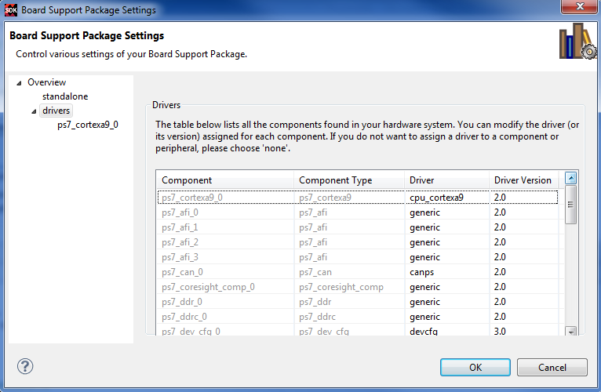

Use the Drivers page of the Software Platform Settings dialog box to select the drivers to use for the peripherals in your system.

The Drivers page contains the following functions:
Name |
Function |
|---|---|
Peripheral |
Name of the hardware peripheral. |
HW Version |
Version of the hardware peripheral. |
Instance |
Name of the hardware peripheral instance. |
Driver |
Name of the software driver used. If you don’t want to include this peripheral in the software platform, use “none” as the driver name. |
Version |
Version of the software driver used. |